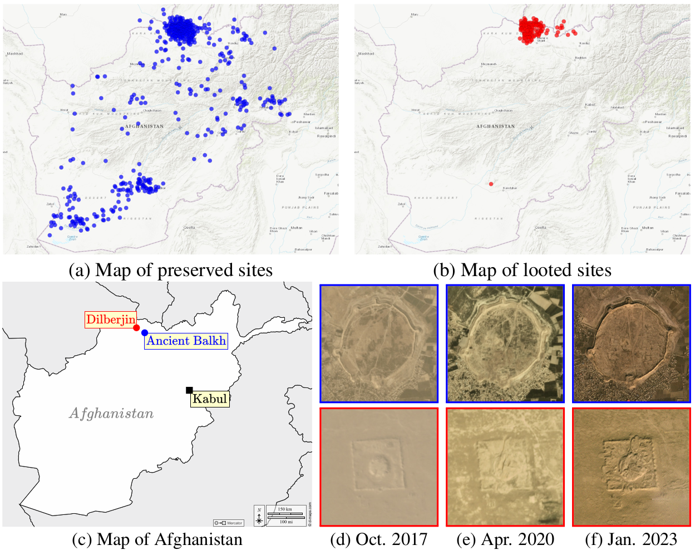

Detecting Looted Archaeological Sites from Satellite Image Time Series
Elliot Vincent1,2
Mehraïl Saroufim3
Jonathan Chemla3
Yves Ubelmann3
Philippe Marquis4
Jean Ponce5,6
Mathieu Aubry1
14
Abstract
Archaeological sites are the physical remains of past human activity and one of the main sources of information about past societies and cultures. However, they are also the target of malevolent human actions, especially in countries having experienced inner turmoil and conflicts. Because monitoring these sites from space is a key step towards their preservation, we introduce the DAFA Looted Sites dataset, DAFA-LS, a labeled multi-temporal remote sensing dataset containing 55,480 images acquired monthly over 8 years across 675 Afghan archaeological sites, including 135 sites looted during the acquisition period. DAFA-LS is particularly challenging because of the limited number of training samples, the class imbalance, the weak binary annotations only available at the level of the time series, and the subtlety of relevant changes coupled with important irrelevant ones over a long time period. It is also an interesting playground to assess the performance of satellite image time series (SITS) classification methods on a real and important use case. We evaluate a large set of baselines, outline the substantial benefits of using foundation models and show the additional boost that can be provided by using complete time series instead of using single images.
Introducing DAFA-LS
1. Monitoring Afghan archaeological sites

Overview. DAFA Looted Sites (DAFA-LS) contains monthly satellite image time series (SITS) of
Afghan archaeological sites acquired between 2016 and 2023. We show the location of preserved (a)
and looted (b) sites, adding strong random noise to their coordinates to prevent misuse of the data.
We also show images (d-f) from two sites (c): Ancient Balkh (in blue, top row) has been preserved
from looting, while Dilberjin (in red, bottom row) suffered irreparable damage.
2. Benchmark
| Method | OA | F1 | AUC | FAR |
|---|---|---|---|---|
| Single-frame methods | ||||
| ResNet20 | 54.7 | 54.5 | 75.3 | 54.9 |
| DOFA* | 76.7 | 67.0 | 84.0 | 7.4 |
| Multi-frame pixel-wise methods | ||||
| DuPLo | 52.1 | 50.4 | 50.9 | 52.0 |
| TempCNN | 55.7 | 44.2 | 58.8 | 34.9 |
| Transformer | 56.4 | 63.5 | 62.7 | 68.0 |
| LTAE | 52.5 | 58.0 | 62.0 | 65.7 |
| Multi-frame whole-image methods | ||||
| PSE+LTAE | 55.1 | 47.7 | 59.5 | 39.4 |
| UTAE | 62.0 | 58.9 | 64.5 | 39.4 |
| TSViT (classification head) | 64.3 | 53.0 | 70.8 | 23.4 |
| TSViT (segmentation head) | 64.6 | 60.2 | 69.6 | 35.5 |
| DOFA*+LTAE | 78.7 | 74.9 | 87.1 | 18.9 |
Classification performance. We evaluate several methods trained on DAFA-LS and
distinguish between methods that process a single image at a time (single-frame) and methods
receiving time series as input (multi-frame). Multi-frame methods can be pixel-wise or whole-
image based. We indicate with a star (*) methods that have been pretrained on another dataset
beforehand. Best scores are highlighted in bold.
BibTeX
If you find this work useful for your research, please cite:
@misc{
vincent2024detecting,
title={Detecting Looted Archaeological Sites from Satellite Image Time Series},
author={Elliot Vincent and Mehraïl Saroufim and Jonathan Chemla and Yves Ubelmann and Philippe Marquis,and Jean Ponce and Mathieu Aubry},
year={2024},
eprint={},
archivePrefix={arXiv},
primaryClass={cs.CV}
}
Acknowledgements
The work of Mathieu Aubry was supported by the European Research Council (ERC project DISCOVER, number 101076028). Jean Ponce was supported by the Louis Vuitton/ENS chair on artificial intelligence and the French government under management of Agence Nationale de la Recherche as part of the Investissements d’avenir program, reference ANR19-P3IA0001 (PRAIRIE 3IA Institute). This work was granted access to the HPC resources of IDRIS under the allocation 2024-AD011015272 made by GENCI. We thank Titien Bartette, Charlotte Fafet and Loïc Landrieu for their valuable feedbacks, and Guillaume Astruc and Lucas Ventura for their careful proofreading.